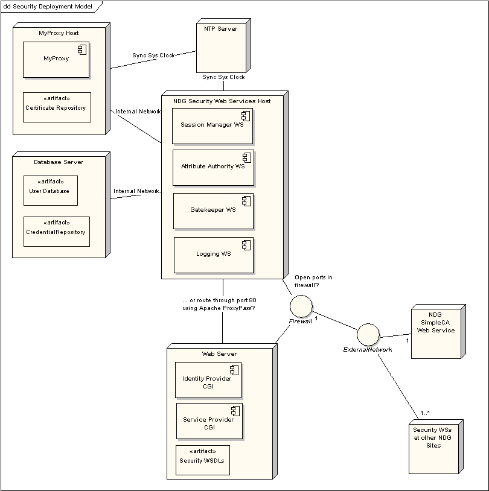

NERC Data
Grid Security Installation Guide Version 1.0
Document Log
|
Version Number |
Date |
Comment |
|
0.1 |
04/11/05 |
First Draft |
|
0.2 |
21/02//06 |
Draft for installation at NOCS |
|
0.3 |
07/04/06 |
Updates following installation at NOCS |
|
0.4 |
25/07/06 |
Include deployment model and details about SysV style init scripts for web services. |
|
0.5 |
16/01/07 |
Instructions for installation of python packages and associated C library dependencies from source and corrections for MyProxy installation. Installation instructions apply to NDG-Security Post Alpha release 0.72. |
|
0.6 |
17/08/07 |
Updated for NDG Beta release.
|
|
0.7 |
03/10/07 |
Tidied headers for creation of HTML version |
|
0.8 |
09/10/07 |
|
|
0.9 |
11//10/07 |
|
|
1.0 |
11/01/08 |
|
Contents
3. Software Installation Components 10
4.1 Globus MyProxy and SimpleCA 11
4.1.1 MyProxy and NDG Security Background 11
4.1.2 MyProxy user account and the repository location considerations 11
4.1.4 SimpleCA Installation 13
4.1.5 Host Certificate Creation 16
4.1.6 MyProxy Configuration File 17
4.1.7 MyProxy SimpleCA Configuration 17
4.1.8 MyProxy PAM Configuration 19
4.1.10 Adding MyProxy Server to the system start up 22
4.2 NDG Security Python Packages 23
4.2.2 Installation Procedure 23
4.2.3 NDG Web Services Configuration 24
4.2.4 Session Manager Configuration 27
4.2.5 Attribute Authority Configuration 32
5.1 Postgres PAM for MyProxy 37
5.2.3 New mysql User Account 38
5.2.4 Unpacking the tarball 39
5.2.6 Create the Grant Tables 40
5.2.7 File and Directory Permissions 40
5.2.9 Securing MySQL Accounts 41
5.2.10 Server Automated Start up 42
5.3 HTTPS set-up with Apache Web Server 42
5.3.1 Web Server Host Certificate Generation 42
5.3.2 Apache Configuration File Settings 42
5.4 Apache Web Server Proxy Settings Configuration for Web Services 42
5.5 An Example Attribute Authority AAUserRoles interface class 43
http://grid.ncsa.uiuc.edu/myproxy/ - NCSA MyProxy site
http://grid.ncsa.uiuc.edu/myproxy/ca/ - MyProxy Certificate Authority
http://grid.ncsa.uiuc.edu/myproxy/pam.html – MyProxy PAM Support
http://www-unix.globus.org/toolkit/docs/4.0/security/ - Globus 4.0 and Security
http://peak.telecommunity.com/DevCenter/setuptools - Python Eggs and Easy Install
http://pywebsvcs.sourceforge.net/ - Python ZSI SOAP Web Services package
http://chandlerproject.org/bin/view/Projects/MeTooCrypto - Python M2Crypto OpenSSL wrapper
http://twistedmatrix.com/trac/ - Python Twisted Application Server
NDG Security - Security Measures for Installation [v0.2, 7 September 2005], http://bscw.badc.rl.ac.uk/bscw/bscw.cgi/d77103/NDG%20Security%20-%20Security%20Measures%20for%20Installation
This is a guide for system administrators and developers deploying NDG security at a data centre.
For NDG Security Web Services: a host running RedHat Enterprise AS4 or later is recommended. Other Linux distributions may also be suitable.
For MyProxy: a separate host machine (See MyProxy for details of operating systems supported). The host must be secure: if possible a dedicated machine with minimal other services running on it. It should be kept up to date with patches and system logs monitored regularly.
MyProxy and Security web services hosts must be configured to link with an NTP server to enable clocks to be synchronised with security services running at other NDG sites.
Access to a web server if security for web based applications is required. The web server must be able to be configured to support HTTPS.
[MySQL 3.23 or greater or Postgres – these are optional and are required for the NDG CredentialRepository only]
Python 2.4 or later
Python setuptools utility
OpenSSL is required at version 0.9.8 or greater. Libraries and header files must be present in addition to executable(s)
SWIG 1.3.24 or later (for M2Crypto Python OpenSSL wrapper)
Also note document NDG Security - Security Measures for Installation (see Ref 1 above).
The following diagram gives an example deployment configuration for NDG security services.

All services are positioned behind the firewall. MyProxy is installed on a dedicated machine in order to make its repository as secure as possible. Connections to MyProxy may be made from the Session Manager web service only from within the internal network.
In the above, security web services are run together on the same host but this does not have to be the case. They can be run on separate servers. Similarly, the web server is on a separate host but could be run on the same machine as the web services if it was felt to be appropriate.
In the above diagram Attribute Authority accesses a user database. It is assumed that the target site has a database to store user and user role/access right information. This information needn’t be stored by means of a database and could be represented in some other way. It is for the data provider to decide. Similarly, the Session Manager web service interfaces with a Credential Repository. This is a database in the above but could be some other kind of permanent store.
Databases are on a separate server to the web services host. Web services access the databases over the internal network. Finally, the web services have ports exposed in some way through the firewall to enable communication with other NDG security web services at other sites.
The NDG Security software can be divided into the categories of Python packages which implement NDG Security web services and third party packages Globus MyProxy and SimpleCA.
The Python software is package using setuptools eggs. These are divided into separate components to suit the particular installation required:
ndg_security_server – components required to run services
ndg_security_common – components required by both server and common eggs
ndg_security_client – components for building clients to NDG security services. For example, a data provider’s web application server would these to enable the securing of access to resources or an organisation’s Identity provider would need these to authenticate and allocate authorisation attributes to users.
ndg_security_test – unit tests for all components
ndg_security – install all: client, server and common components
Eggs rely on the distutils easy_install command to manage installation but NDG security uses an additional script ndg_security_install.py to install eggs and carry out the additional installation tasks to correctly configure the software.
The following additional packages are required:
Globus MyProxy 4.0.5 (or later) – source installer tar ball may be downloaded from the Globus site (http://www.globus.org/toolkit/downloads/4.0.1/)
Globus SimpleCA to enable the MyProxy Certificate Authority.
These two packages should be installed on the target host for MyProxy.
This section is divided into the MyProxy and Python packages installations. Note that you will almost certainly wish to install MyProxy on a separate secure server to the other Python based security services.
NDG Security makes use of MyProxy from the Globus toolkit to enable the use of individual user X.509 certificates to secure messages in transactions. For example, to request an Attribute Certificate from an Attribute Authority the request can be signed using the user's certificate to enable the Attribute Authority to authenticate it.
MyProxy is a flexible and can be configured to run in a number of different modes or combination of modes:
users can upload a proxy to their personal user certificate for storage in the MyProxy repository for later use in delegation
Personal user certificates issued by a CA can by stored in the repository.
MyProxy can be run with the Globus SimpleCA package issuing certificates dynamically based on a callout to some external authentication system. MyProxy has basic support for PAM (Pluggable Authentication Module) and SASL (Simple Authentication and Security Layer).
3) is the preferred mode for NDG deployments as typically NDG partners have existing user databases against which their users authenticate. MyProxy can be configured to query the database with username/password via PAM/SASL.
MyProxy runs as a service myproxy-server on its host machine and user credentials are held in a directory on the file system. It is important to secure the host to ensure the credentials are not compromised. It is recommended to install MyProxy on a separate host to the other NDG security services as a security measure. This host must be carefully secured and run minimal other services.
MyProxy may be installed as root or using a separate user account. The latter provides an extra degree of security but for use with PAM, the MyProxy must be installed and run as root. Note that the MyProxy repository will be in a standard location.
If MyProxy is installed as root, this is /var/myproxy.
If installed as under an alternative user account, $GLOBUS_LOCATION/var/myproxy.
When run in mode 3) the repository is not used since all credentials are generated dynamically on a successful MyProxy logon request. It is possible to explicitly define an alternate location but this can only be done by providing a command line argument to myproxy-server. Note that this might be visible in the process list of the host machine as output from ps. This could be avoided by running myproxy-server with xinetd (See 4.1.10.1).
This guide assumes installation as root.
MyProxy is available with Globus. Version 4.0.5 distribution is recommended for use with the NDG Security software. C and C++ development packages are needed for the build.
A binary version is available but it is
recommended to build and install from the source code to include PAM
dependencies (http://grid.ncsa.uiuc.edu/myproxy/pam.html).
To check, there should be a pam_appl.h
header file either in /usr/include/security or /usr/include/pam.
If they
are not present, they can be installed with the PAM development
package for your Linux distribution – e.g. pam-devel (Redhat) or
libpam*-dev (Debian based).
Due to a
limitation in PAM, MyProxy must be built and installed under the
system root account.
BuildThe code
can be downloaded from http://www.globus.org/toolkit/downloads/4.0.5
Note that it is possible to set a target for make so that only the MyProxy components of Globus are built. Click on the link for the gt4.0.5-all-source-installer tarball. Extract the files and change to the gt4.0.5-all-source-installer/ directory created.
Configure the build settings. The default installation location is /usr/local/globus-4.0.5. Use –prefix=<dir path> command line option to specify an alternative location for the installation.
|
$ ./configure
|
Compile and install MyProxy:
|
$ make gsi-myproxy postinstall
|
When running ./configure you may see an error if the JAVA_HOME environment variable is not set. This can be ignored because Java is not required for the MyProxy build.
If you encounter errors with the build you can trobuleshoot by checking config.log in the BUILD/globus_core-* or source-trees/core/source directories.
Verify myproxy has built with PAM support by running the command:
|
$ /usr/local/globus-4.0.5/sbin/myproxy-server -V myproxy-server version MYPROXYv2 (v3.7 12 Dec 2006 PAM)
|
If 'PAM' is included in the output as above then the executable has built correctly to include PAM support.
Reference:
The SimpleCA can be set up under a dedicated user account but this user must have read/write permissions to the Globus MyProxy installation location. For simplicity, this guide assumes installation for MyProxy and the SimpleCA under root.
To install first initialise the environment settings (These may be added to the appropriate start-up file e.g. .bashrc):
|
$
export GLOBUS_LOCATION=/usr/local/globus-4.0.5 |
Installation script:
|
$ $GLOBUS_LOCATION/setup/globus/setup-simple-ca |
You will be prompted for the following information:
Subject Name: When prompted, type
'n' to override the default and set an appropriate subject name for
the CA for your organisation. O = Organisation Name, OU =
Organisational Unit (you can set more than one), CN = the Common
Name i.e. the name of the Certificate Authority. For
example,
/O=STFC/OU=Rutherford Appleton
Laboratory/OU=Testing/CN=CA
could be the Certificate
Authority’s subject for a CA for the Space Science and Technology
Department at Rutherford Appleton Laboratory which is part of the
Science and Technology Facilities Council.
e-mail Address: the contact address for certificate requests. If you are using the CA for MyProxy only you will probably not need this facility. You could enter globus@<target host> or some suitable administrative contact
CA Certificate Expiry Date: Press enter to accept the default of five years, otherwise override and enter your required period.
PEM Pass phrase: this is the password that will protect the CA's private key file. It will need to be entered in MyProxy's configuration file to enable MyProxy to dynamically issue certificates.
A message will appear indicating that the set-up has completed and confirming the subject chosen for your certificate and the location of certificate and private key:
|
$ $GLOBUS_LOCATION/setup/globus/setup-simple-ca
C e r t i f i c a t e A u t h o r i t y S e t u p
This script will setup a Certificate Authority for signing Globus users certificates. It will also generate a simple CA package that can be distributed to the users of the CA.
The CA information about the certificates it distributes will be kept in:
/root/.globus/simpleCA/
The unique subject name for this CA is:
cn=Globus Simple CA, ou=simpleCA-gabriel, ou=GlobusTest, o=Grid
Do you want to keep this as the CA subject (y/n) [y]:n
Enter a unique subject name for this CA:cn=CA, ou=BADC, ou=Gabriel, o=NDG
Enter the email of the CA (this is the email where certificate requests will be sent to be signed by the CA):p.j.kershaw@rl.ac.uk
The CA certificate has an expiration date. Keep in mind that once the CA certificate has expired, all the certificates signed by that CA become invalid. A CA should regenerate the CA certificate and start re-issuing ca-setup packages before the actual CA certificate expires. This can be done by re-running this setup script. Enter the number of DAYS the CA certificate should last before it expires. [default: 5 years (1825 days)]:
Enter PEM pass phrase: Verifying - Enter PEM pass phrase:
creating CA config package...done.
A self-signed certificate has been generated for the Certificate Authority with the subject:
/O=NDG/OU=Gabriel/OU=BADC/CN=CA
If this is invalid, rerun this script
/usr/local/gt4.0.5/setup/globus/setup-simple-ca
and enter the appropriate fields.
-------------------------------------------------------------------
The private key of the CA is stored in /root/.globus/simpleCA//private/cakey.pem The public CA certificate is stored in /root/.globus/simpleCA//cacert.pem
The distribution package built for this CA is stored in
/root/.globus/simpleCA//globus_simple_ca_2cba3376_setup-0.19.tar.gz
This file must be distributed to any host wishing to request certificates from this CA.
CA setup complete.
The following commands will now be run to setup the security configuration files for this CA:
$GLOBUS_LOCATION/sbin/gpt-build /root/.globus/simpleCA//globus_simple_ca_2cba3376_setup-0.19.tar.gz
$GLOBUS_LOCATION/sbin/gpt-postinstall -------------------------------------------------------------------
setup-ssl-utils: Configuring ssl-utils package Running setup-ssl-utils-sh-scripts...
***************************************************************************
Note: To complete setup of the GSI software you need to run the following script as root to configure your security configuration directory:
/usr/local/gt4.0.5/setup/globus_simple_ca_2cba3376_setup/setup-gsi
For further information on using the setup-gsi script, use the -help option. The -default option sets this security configuration to be the default, and -nonroot can be used on systems where root access is not available.
***************************************************************************
setup-ssl-utils: Complete
|
The number in the file names “ 2cba3376” is a unique hash identifier for the CA. It will be different for for your installation when you run the setup. To complete the set-up run the setup-gsi script:
|
$ $GLOBUS_LOCATION/setup/globus_simple_ca_2cba3376_setup/setup-gsi –default |
As root user to carry out these steps. First check the path to the command grid-cert-request:
|
$ which grid-cert-request
|
Should return something like:
/usr/local/globus-4.0.5/bin/grid-cert-request
If not check the settings as made earlier for the SimpleCA:
|
$
export GLOBUS_LOCATION=/usr/local/globus-4.0.5 |
To generate a host certificate request:
|
$ grid-cert-request –host <fully qualified hostname>
|
This creates the files hostcert.pem, hostkey.pem and hostcert_request.pem in /etc/grid-security directory. hostcert.pem is empty.
In order to obtain the certificate it must be signed by the CA:
|
$ grid-ca-sign -in /etc/grid-security/hostcert_request.pem -out /etc/grid-security/hostcert.pem |
hostcert_request.pem is no longer needed and can be deleted.
A MyProxy configuration file is normally kept in the Globus installation under the etc directory. If this file is not already present, copy the sample file:
|
$ cp $GLOBUS_LOCATION/share/myproxy/myproxy-server.config $GLOBUS_LOCATION/etc
|
Edit $GLOBUS_LOCATION/etc/myproxy-server.config modifying the entries under the section Complete Sample Policy so that they are all uncommented (remove leading # character):
|
# # Complete Sample Policy # # The following lines define a sample policy that enables all # myproxy-server features. See below for more examples. accepted_credentials "*" authorized_retrievers "*" default_retrievers "*" authorized_renewers "*" default_renewers "none" authorized_key_retrievers "*" default_key_retrievers "none" trusted_retrievers “*” default_trusted_retrievers “none”
|
Note that the wildcards for these fields may be modified such that only Distinguished Names of a given format are accepted e.g. "/O=NDG/OU=BADC/*"
The chmod command ensures that only the globus user has read/write access for the directory. Note also that the directory need not be called myproxy.
NDG Security uses MyProxy to dynamically generate user certificates on user login. For this, MyProxy requires configuration details from the SimpleCA. Make these settings in $GLOBUS_LOCATION/etc/myproxy-server.config (Note that the sensitivity of this information and the need to secure this file carefully!)
enable any retriever – retrieval is based on the retrievers login credentials:
|
authorized_retrievers "*" |
Set the path to the CA certificate. In this example the CA is installed in the root user's home directory:
|
certificate_issuer_cert /root/.globus/simpleCA/cacert.pem |
Set the path to the CA private key:
|
certificate_issuer_key /root/.globus/simpleCA/private/cakey.pem |
Provide the password to the CA's private key. (This was set when you created the SimpleCA with $GLOBUS_LOCATION/setup/globus/setup-simple-ca):
|
certificate_issuer_key_passphrase "password" |
Set the path to the certificate serial file
|
|
Configure how MyProxy maps usernames to Distinguished Names in generated certificates. This can be done either with a grid mapfile or a script. A script is more flexible as you can use a wildcard match rather requiring a map entry for every single user. An example script is:
|
#!/bin/sh exit 0 |
In the example above, if a user
logs in as pjkershaw, they will be issued with a certificate with
the Distinguished Name /O=NDG/OU=Gabriel/OU=BADC/CN=pjkershaw. Copy
the file above file into $GLOBUS_LOCATION/sbin/mapper.sh replacing
“/O=NDG/OU=Gabriel/OU=BADC/CN=” with the form of the
Distinguished Name that you require for users for your site. Ensure
that the file has execute permissions set e.g.
|
$ chmod 700 $GLOBUS_LOCATION/sbin/mapper.sh
|
Refer to the script in
$GLOBUS_LOCATION/etc/myproxy-server.config with this setting:
|
|
Reference: http://grid.ncsa.uiuc.edu/myproxy/pam.html
NDG Security makes use of MyProxy with PAM to enable MyProxy logon requests to be authenticated against a site's existing security infrastructure, for example a user database or LDAP repository. Linux systems have PAMs for login, ssh and other services. PAMs can be obtained for the major database varieties such as MySQL, Postgres and Oracle.
To configure MyProxy for PAM, settings are made via myproxy-server.config to two different fields:
pam: may be set to disabled, “required” or “sufficient”. Set to “required”. With this setting, all MyProxy logon requests will be authenticated via PAM. The “sufficient” setting may be useful in some circumstances. It enables authentication via PAM and via credentials held in the MyProxy repository.
pam_id: name that MyProxy uses to identify itself to PAM. This can correspond either to a file of the same name in /etc/pam.d or entries prefixed with that name in /etc/pam.conf. This setting determines the PAM used by MyProxy to authenticate.
The most straightforward way to set-up MyProxy with PAM is to try one of the existing PAMs such as login. If the pam_id is set to login, a myproxy-logon request will link to that user's Linux login.
Appendices are provided at the end of this document for some of the more common configurations.
A simple way to test the MyProxy configuration to run the myproxy-logon client command. For initial testing set the pam_id in $GLOBUS_LOCATION/etc/myproxy-server.config to “logon” so that it uses the Linux user accounts for authentication.
Client error messages can be difficult to interpret but a -v verbose option is provided to give more information. In addition, MyProxy server can be run in debug mode using the -d command line switch. MyProxy should be run under the user account in which it was installed - root. Ensure that the environment is set correctly i.e. GLOBUS_LOCATION variable set and $GLOBUS_LOCATION/etc/globus-user-env.sh has been sourced:
|
$
export GLOBUS_LOCATION=/usr/local/globus-4.0.5 |
If you already have MyProxy running via xinetd or as a process started from a SysV init script, it is possible to run a separate MyProxy server process on a different port with the -p flag.
|
$ myproxy-server -d -v -p 60000 myproxy-server v3.7 12 Dec 2006 PAM starting at Fri Dec 21 12:45:59 2007 reading configuration file /usr/local/globus-4.0.5/etc/myproxy-server.config CA enabled using storage directory /var/myproxy Starting myproxy-server on localhost: 60000...
|
Note that in debug mode, myproxy-server will exit after the first request made to it.
Run myproxy-logon in a separate window under a user account for which you know the Linux password. Provide the port number if myproxy-server was started on a different port to the default and give the full name of the server as set in the host certificate (/etc/grid-security/hostcert.pem)
|
$ myproxy-logon -v -s <fully qualified server hostname> -p 60000 MyProxy v3.7 12 Dec 2006 PAM Attempting to connect to 127.0.0.1:60000 Enter MyProxy pass phrase: using trusted certificates directory /etc/grid-security/certificates no valid credentials found -- performing anonymous authentication server name: /O=NDG/OU=Gabriel/OU=BADC/CN=gabriel<> checking that server name is acceptable... server name does not match "myproxy@gabriel<>" server name matches "host@gabriel<>" authenticated server name is acceptable A credential has been received for user pjkershaw in /tmp/x509up_u1000.
|
The equivalent output from the server will be something like:
|
Connection from 127.0.0.1 using trusted certificates directory /etc/grid-security/certificates Authenticated client <anonymous> applying trusted_retrievers policy applying authorized_retrievers policy applying authorized_renewers policy user_dn_lookup() resolve_via_mapapp(/usr/local/globus-4.0.5/sbin/mapper.sh, pjkershaw) Checking passphrase via PAM. PAM policy: "sufficient"; PAM ID: "logon" PAM authentication succeeded for pjkershaw Received GET request from <anonymous> Sending OK response to client <anonymous> using CA callout Calling CA Extensions handle_certificate() Cert request loaded. Got a cert request for user "pjkershaw", with pubkey hash "282944311", and lifetime "43200" Using internal openssl/generate_certificate() code Generating certificate internally. user_dn_lookup() using cached value tokenizing: /O=NDG/OU=BADC/OU=Gabriel/CN=pjkershaw adding: O = NDG adding: OU = BADC adding: OU = Gabriel adding: CN = pjkershaw Assigning serial number Loaded serial number F6 from /root/.globus/simpleCA/serial serial number assigned cert lifetime: 43200 CAkey: /root/.globus/simpleCA/private/cakey.pem Signing internally generated certificate. Issued certificate for user "pjkershaw", with DN "/O=NDG/OU=BADC/OU=Gabriel/CN=pjkershaw", lifetime "43200", and serial number "246" Sending OK response to client <anonymous> Client <anonymous> disconnected
|
The certificate and private key are written to file in /tmp by myproxy-logon. This takes the form x509up_<uid>. It's possible to check the certificate generated using openssl e.g.:
|
$ openssl -in /tmp/x509up_1001 -text
|
The output includes details
including the certificate's DN, issuer and expiry time. If you wish
to run the test again delete or move this file as myproxy-logon will
try to use it to authenticate to the MyProxy server.
If you encounter problems check the output from the client and server. commands. The system logs may contain useful additional information from the PAM used.
The Python MyProxy client unit tests can be used to test the server from a separate client machine where Python NDG services are installed but not MyProxy itself. The MyProxy unit tests are in the package ndg.security.test.myProxy.
Any of the standard mechanisms may be used such as adding a SysV style init script or using inetd or xinetd. inetd/xinetd are preferred:
myproxy-server process will not show on ps command listing
It’s more efficient since it’s only invoked when a request from a MyProxy client is received.
It’s easy to configure so that myproxy-server runs as an alternative user to root.
To run the myproxy server using inetd or xinetd, as root user:
Add the entries in $GLOBUS_LOCATION/share/myproxy/etc.services.modifications to the /etc/services or /etc/inet/services file:
|
myproxy-server 7512/tcp # MyProxy server
|
Add the entries from $GLOBUS_LOCATION/share/myproxy/etc.inetd.conf.modifications
For inetd add to /etc/inetd.conf or /etc/inet/inetd.conf, or …
for xinetd, copy $GLOBUS_LOCATION/share/myproxy/etc.xinetd.myproxy to /etc/xinetd.d/myproxy. Modify the paths in the file according to your installation and set the user to the correct user name for running myproxy-server e.g.
|
service myproxy-server { socket_type = stream protocol = tcp wait = no user = globus server = /usr/local/NDG/globus-4.0.1/sbin/myproxy-server env = GLOBUS_LOCATION=/usr/local/globus-4.0.5 LD_LIBRARY_PATH=/usr/local/globus-4.0.5/lib disable = no only_from = localhost.localdomain <hostAddress1> <hostAddress2> } |
Note also, the additional setting in this example for only_from. This a limit to be placed on which hosts clients can connect from to the server. In the above, clients can connect from the local machine (note the fully qualified name including localdomain) and from the hosts <hostAddress1> and <hostAddress2>. Care must be taken with these settings. Client requests will exit with an SSL error if set incorrectly.
Reactivate the inetd / xinetd. This is typically accomplished by sending the SIGHUP signal to the server process. Redhat Linux machines include the GUI tool redhat-config-services to allow convenient management of services. Refer to the inetd or xinetd man page for your system.
A sample SysV-style boot script for is available in the Globus installation at, $GLOBUS_LOCATION/share/myproxy/etc.init.d.myproxy.
To install:
|
$ cp $GLOBUS_LOCATION/share/myproxy/etc.init.d.myproxy /etc/rc.d/init.d/myproxy $ chkconfig --add myproxy
|
Edit the file to set the GLOBUS_LOCATION environment variable correctly.
Before proceeding with the installation check that an up to date version of OpenSSL is installed:
|
$ openssl version |
0.9.8 or greater is required. Should you need to upgrade, OpenSSL is available from http://www.openssl.org/source/. Once downloaded, unpack the tarball and follow the installation intstructions.
SWIG is a tool to help with bindings from C/C++ to interpreted languages such as Python. The Python OpenSSL wrapper M2Crypto uses it and version 1.3.24 or later is required. Downloads are available from, http://www.swig.org.
Log in to the target host as root. Change to a suitable directory to hold temporary installation files.
The first step is to install Python setuptools, the package that enables the use of Python eggs. Download the setuptools bootstrap script:
|
$ wget http://peak.telecommunity.com/dist/ez_setup.py |
You may need to set the environment for a http proxy at your site. For example,
|
$ export http_proxy=http://yourproxyurl.com:8080 |
Run the bootstrap script. Make sure to use the correct version of python in your system path. Some systems may have multiple python versions installed:
|
$ python ez_setup.py |
Once completed, you can delete ez_setup.py.
NDG security uses a wrapper to setuptools easy_install to enable custom installation steps to be correctly carried out. Download the script from the NDG distribution site:
|
$ wget http://ndg.nerc.ac.uk/dist/ndg-security-install.py |
Now carry out the installation of the NDG security python packages:
|
$ python ./ndg-security-install.py -a |
The script options can be checked using the –h option. –a selects all packages for installation. If there are problems with the installation, see the Troubleshooting Guide in the Appendices section 5.6.
Properties files set the configuration settings for NDG security server side settings. Templates for these are contained within the ndg_security_server installed in your python distribution’s site-packages directory. A future version of the ndg-security-install.py script will extract these and install at a suitable location on the file system. For the moment though, this is a manual process.
Create a configuration area under your servers /etc directory:
|
$
mkdir /etc/ndg |
/etc/ndg/security is recognised by the Python security software by the NDGSEC_DIR environment variable. This variable can be set in the environment of the user account used to run the security services or can be set in the init scripts used to automatically start up the services from server boot up (See sections 4.2.4.2, 4.2.4.3 and 4.2.5.5).
Locate the ndg_security_server egg and copy its conf/ directory into the configuration area. For example if you are using python installed in /usr/local then the conf/ directory will be in:
|
/usr/local/lib/python<python version num>/site-packages/ndg_security_server-<version info>.egg/ndg/security/server/conf |
Copy as follows:
|
$ cp /usr/local/lib/python<python version num>/site-packages/ndg_security_server-<version info>.egg/ndg/security/server/conf /etc/ndg/security |
The conf/ directory will contain these important files:
Session Manager and Attribute Authority properties XML files
openssl.conf – used by the Session Manager to configure client connections to MyProxy
Special .tac configuration files loaded by the Twisted application server used to run Session Manager and Attribute Authority services
certs/ directory for storing X.509 certificates
mapConfig.xml for role mapping and other trust configuration parameters to enable the Attribute Authority to operate with other trusted organisations within NDG
attCertLog/ directory for storing Attribute Certificates issued by the Attribute Authority.
Logging configuration files: sessionMgrLog.cfg and attAuthorityLog.cfg
The default location for log files set in sessionMgrLog.cfg and attAuthorityLog.cfg is $NDGSEC_DIR/log. Create this directory as follows:
|
$ mkdir /etc/ndg/security/log |
Note that it is possible to run security web services under any specified system account and group. Ensure that this user has full access to /etc/ndg/security e.g.
|
$ chmod ndg:ndggroup -R /etc/ndg/security |
The Session Manager and Attribute Authority web services require individual X.509 certificates as a means to identify them in the various interactions required for user registration, authentication and authorisation. These may be created by similar means to the host certificate creation.
Change directory to $NDGSEC_DIR/conf/certs. The certificates will be stored here. Make a new private key and certificate request for the Session Manager:
|
$ openssl genrsa –out sm-key.pem 2048 $ chmod 400 sm-key.pem $ openssl req –new –key sm-key.pem –out sm.csr
|
The private key may be password protected if required by adding the –des3 option to the genrsa command. Type in a password when prompted. The req command will prompt you for the components of the Distinguished Name for the new certificate. When prompted for the Common Name, enter ‘SessionManager’. The other fields can be set as required but by convention for NDG, the Organisation field has been set to NDG and the Organisation Unit to the individual data provider name e.g. BADC. All other fields have been omitted. You can skip individual fields by enter ‘.’ When prompted.
Forward the request file to the appropriate CA. This could be your SimpleCA created for use with MyProxy – see MyProxy installation. The CA will issue a certificate file. Copy this file as $NDGSEC_DIR/conf/certs/sm-cert.pem. The request file can be deleted once a certificate has been obtained from the CA.
Repeat this process for the Attribute Authority, selecting ‘AttributeAuthority’ for the Common Name.
|
$ openssl genrsa –out aa-key.pem 2048 $ chmod 400 aa-key.pem $ openssl req –new –key aa-key.pem –out aa.csr
|
It is recommended that the Session Manager is run over https to keep user login credentials secured. A server certificate and key will be required in addition to enable this.
If required, a certificate could be issued from your SimpleCA. Follow the same procedure as used for the Session Manager and Attirbute Authority above creating a private key and certificate request. The private key should be generated without a password. When generating the certificate request ensure that the Common Name is set to the fully qualified name of the server host.
Once available the certificate and private key can be added to the $NDGSEC_DIR/conf/certs directory and can be referenced by the Session Manager’s properties file with the sslCertFile and sslKeyFile elements respectively.
A copy of the NDG Certificate Authority’s X.509 certificate is also required. Obtain this from the NDG CA administrator and copy it into the $NDGSEC_DIR/conf/certs directory.
Note that all other trusted NDG partner organisations MUST have copies of your CA certificate. If they don't, partner organisations NDG Security infrastructures will reject requests from your security services. CA certificates are referenced in the Attribute Authority and Session Manager properties file settings sslCACertDir and caCertFileList. Configuration for Gatekeepers may also need to reference your CA certificate.
Configuration parameters may be set via a properties file. In addition, the Session Manager can optionally make use of a Credential Repository database. This enables the credentials that users acquire during a session to be stored so that they may be retrieved. When installed, the default configuration set in the Session Manager Properties file is to not use a Credential Repository. If this is the case, skip this section.
Create the Credential Repository database. In the example below a MySQL database is assumed. Notes on installing MySQL are given in the Appendices section 5.2.
|
$ mysql –u root –p mysql> create database ndgCredRepos;
|
Use the script
init-credrepos-db to create the tables. As the globus
user, run the script. Enter the password for the ndgUser
account when prompted and type yes
to confirm creation of the tables:
|
$ init-credrepos-db –u root Database password: Are you sure you want to initialise the database tables? (yes/no) yes Tables created
|
To check that the tables have
been created, restart the database client:
|
$ mysql –u root –p –D ndgCredRepos mysql> show tables; +------------------------+ | Tables_in_ndgCredRepos | +------------------------+ | UserCredential | | UserID | +------------------------+ 2 rows in set (0.00 sec)
|
A separate account should be created for the Session Manager to access the database. It should have sufficient permissions to be able to read and write records. For details of how to create an account in MySQL see the Appendices section 5.2.9.
Edit sessionMgrProperties.xml in $NDGSEC_DIR/conf and modify the default settings:
|
<?xml version="1.0" encoding="utf-8"?> <sessMgrProp> <portNum></portNum> <useSSL>Yes</useSSL> <!-- leave blank to use http --> <sslCertFile>$NDGSEC_DIR/conf/certs/server-cert.pem</sslCertFile> <sslKeyFile>>$NDGSEC_DIR/conf/certs/server-key.pem </sslKeyFile> <!--
PKI settings for signature of outbound SOAP messages --> <useSignatureHandler>Yes</useSignatureHandler> <!-- leave blank for no signature --> <certFile>>$NDGSEC_DIR/conf/certs/sm-cert.pem</certFile> <keyFile>>$NDGSEC_DIR/conf/certs/server-key.pem</keyFile> <keyPwd></keyPwd> <!-- CA
Certificates used to verify X.509 certs used in peer SOAP
messages, Set the certificate used to verify the signature of messages from the client. This can usually be left blank since the client is expected to include the cert with the signature in the inbound SOAP message --> <clntCertFile></clntCertFile> <sessMgrEncrKey></sessMgrEncrKey> <sessMgrURI></sessMgrURI> <cookieDomain></cookieDomain> <myProxyProp> <!-- Delete this element and take setting from MYPROXY_SERVER environment variable if required --> <hostname>ENTER THE FULLY QUALIFIED HOSTNAME OF THE SERVER</hostname> <!-- Delete this element to take default setting 7512 or read MYPROXY_SERVER_PORT setting --> <port>7512</port> <!-- Useful if hostname and certificate CN don't match correctly. Globus host DN is set to "host/<fqdn>". Delete this element and set from MYPROXY_SERVER_DN environment variable if prefered <serverDN></serverDN> --> <!-- Set "host/" prefix to host cert CN as is default with globus --> <serverCNprefix>host/</serverCNprefix> <!-- This directory path is used to locate the OpenSSL configuration file
The settings are used to set up the defaults for the Distinguished Name of the new proxy cert. issued
GLOBUS_LOCATION or GRID_SECURITY_DIR environment variables may be used but the settings can be independent of any Globus installation
<openSSLConfFilePath>$NDGSEC_DIR/conf/openssl.conf</openSSLConfFilePath> <tmpDir>/tmp</tmpDir> <!-- Limit on maximum lifetime any proxy certificate can have - specified when a certificate is first created by store() method --> <proxyCertMaxLifetime>24</proxyCertMaxLifetime> <!-- in hours --> <!-- Life time of a proxy certificate when issued from the Proxy Server with getDelegation() method --> <proxyCertLifetime>8</proxyCertLifetime> <!-- in hours --> <caCertFile>$NDGSEC_DIR/conf/certs/cacert.pem</caCertFile> </myProxyProp> <simpleCACltProp> <uri></uri> <xmlSigKeyFile></xmlSigKeyFile> <xmlSigCertFile></xmlSigCertFile> <xmlSigCertPwd></xmlSigCertPwd> </simpleCACltProp> <!-- <simpleCASrvProp> <certExpiryDate></certExpiryDate> <certLifetimeDays></certLifetimeDays> <certTmpDir></certTmpDir> <caCertFile></caCertFile> <signExe></signExe> <path></path> </simpleCASrvProp> --> <credReposProp> <modFilePath></modFilePath> <modName>ndg.security.common.CredWallet</modName> <className>NullCredRepos</className> <propFile></propFile> </credReposProp> </sessMgrProp>
|
Notes
The property file reading software will expand any environment variables included in the file.
openssl.conf file uses the standard OpenSSL configuration file format. It is used by the Session Manager MyProxy client to formulate a certificate request for a proxy certificate generated for a users session when they login. An example is given below. The important section to reference is [ req_distinguished_name ]
|
# # SSLeay example configuration file. # This is mostly being used for generation of certificate requests. #
RANDFILE = $ENV::HOME/.rnd
#################################################################### [ ca ] default_ca = CA_default # The default ca section
#################################################################### [ CA_default ]
dir = ./demoCA # Where everything is kept certs = $dir/certs # Where the issued certs are kept crl_dir = $dir/crl # Where the issued crl are kept database = $dir/index.txt # database index file. new_certs_dir = $dir/newcerts # default place for new certs.
certificate = $dir/cacert.pem # The CA certificate serial = $dir/serial # The current serial number crl = $dir/crl.pem # The current CRL private_key = $dir/private/cakey.pem# The private key RANDFILE = $dir/private/.rand # private random number file
x509_extensions = x509v3_extensions # The extentions to add to the cert default_days = 365 # how long to certify for default_crl_days= 365 # DEE 30 # how long before next CRL default_md = md5 # which md to use. preserve = no # keep passed DN ordering
# A few difference way of specifying how similar the request should look # For type CA, the listed attributes must be the same, and the optional # and supplied fields are just that :-) policy = policy_match
# For the CA policy [ policy_match ] countryName = optional stateOrProvinceName = optional organizationName = match organizationalUnitName = optional commonName = supplied emailAddress = optional
# For the 'anything' policy # At this point in time, you must list all acceptable 'object' # types. [ policy_anything ] countryName = optional stateOrProvinceName = optional localityName = optional organizationName = optional organizationalUnitName = optional commonName = supplied emailAddress = optional
#################################################################### [ req ] default_bits = 1024 default_keyfile = privkey.pem distinguished_name = req_distinguished_name req_extensions = v3_req
[ req_distinguished_name ] # BEGIN CONFIG 0.organizationName = Level 0 Organization 0.organizationName_default = NDG 0.organizationalUnitName = Level 0 Organizational Unit 0.organizationalUnitName_default = BADC #1.organizationalUnitName = Level 1 Organizational Unit #1.organizationalUnitName_default = localdomain commonName = Name (e.g., John M. Smith) commonName_max = 64 # END CONFIG
[ v3_req ] nsCertType = objsign,email,server,client basicConstraints = critical,CA:false
|
The Session Manager can be configured to start up at system boot of the host machine. A SysV style start up script ndg-sm is provided in the installation in:
/usr/local/lib/python<python version num>/site-packages/ndg_security_server-<version info>.egg/ndg/security/server/share
To configure, install this file:
|
$ cp /usr/local/lib/python<python version num>/site-packages/ndg_security_server-<version info>.egg/ndg/security/server /share/ndg-sm /etc/rc.d/init.d $ chkconfig --add ndg-sm
|
Edit the ndg-sm so that it uses the NDGSEC_DIR environment variable to point to the correct location of the .tac file in the conf/ directory. User and group ID settings can be made to run under alternative account to root. If used ensure that $NDGSEC_DIR is set with the necessary permissions to enable access.
Note that the chkconfig command may not be available on your target machine. Please refer to instructions for your particular Linux distribution.
The Attribute Authority also has a properties file for the setting of configuration parameters.
Edit attAuthorityProperties.xml in $NDGSEC_DIR/conf and modify the default settings:
|
<?xml version="1.0" encoding="utf-8"?> <AAprop> <!-- 'name' setting MUST agree with map config file 'thisHost' name attribute --> <name>Organisation Identifier</name> <portNum>SELECT A SUITABLE PORT NUMBER FOR RUNNING THE SERVICE</portNum> <!-- PKI settings for transport level encryption --> <useSSL></useSSL> <!-- leave blank to use http --> <sslCertFile></sslCertFile> <sslKeyFile></sslKeyFile> <sslKeyPwd></sslKeyPwd> <!--
PKI settings for signature of outbound SOAP messages --> <useSignatureHandler>Yes</useSignatureHandler> <!-- leave blank for no signature --> <!-- CA
Certificates used to verify X.509 certs used in peer SOAP
messages, <keyPwd></keyPwd> <caCertFile>$NDGSEC_DIR/conf/certs/cacert.pem </caCertFile> <!-- Set the certificate used to verify the signature of messages from the client. This can usually be left blank since the client is expected to include the cert with the signature in the inbound SOAP message --> <clntCertFile></clntCertFile> <attCertLifetime>86400</attCertLifetime> <!-- Measured in seconds --> <!-- Allow an offset for clock skew between servers running security services. - Use minus sign for time in the past --> <attCertNotBeforeOff>0</attCertNotBeforeOff> <!-- Location of role mapping file --> <mapConfigFile>$NDGSEC_DIR/conf/mapConfig.xml</mapConfigFile> <!-- All Attribute Certificates issued are recorded in this dir --> <attCertDir>$NDGSEC_DIR/conf/attCertLog</attCertDir> <!-- Files in attCertDir are stored using a rotating file handler attCertFileLogCnt sets the max number of files created before the first is overwritten --> <attCertFileName>ac.xml</attCertFileName> <attCertFileLogCnt>1024</attCertFileLogCnt> <dnSeparator>/</dnSeparator> <!-- Settings for custom AAUserRoles derived class to get user roles for given user ID --> <userRolesModFilePath>$NDGSEC_DIR/conf</userRolesModFilePath> <userRolesModName>userRoles</userRolesModName> <userRolesClassName>UserRoles</userRolesClassName> <userRolesPropFile>$NDGSEC_DIR/conf/userRoles.cfg</userRolesPropFile> </AAprop>
|
The Attribute Authority given a valid user proxy certificate serves an attribute certificate containing authorisation roles for that user. It is for the data centre to determine how these roles map to the users identity as given by their Distinguished Name given in the proxy certificate. Typically, a data centre might have a user database which relates user id to authorisation roles.
The Attribute Authority provides a programmatic interface to determine the roles to user id relationship. A custom python class may be written to perform this task. See the Appendices section 5.5.
The role mapping file is stored in the $NDGSEC_DIR/conf directory as mapConfig.xml. This is an XML file which relates local roles at the target data centre to roles of other trusted data centres. These role mapping are made by agreement between data centres.
|
<?xml version="1.0" encoding="utf-8"?> <AAmap> <thisHost name="yourSiteIdentifier"> <aaURI>yourSiteAttAuthorityURI</aaURI> <aaDN>the DN for the Attribute Authority’s X.509 Cert.</aaDN> <loginURI>Your Site Login Page URI (https expected)</loginURI> <loginServerDN>The DN of loginURI’s SSL cert.</loginServerDN> <loginRequestServerDN> The cert. DN for SSL server making a request to loginURI </loginRequestServerDN> </thisHost> <trusted name="BODC"> <aaURI>bodcAttAuthorityURI</aaURI> <aaDN>the DN for the Attribute Authority’s X.509 Cert.</aaDN> <loginURI>BODC’s Login Page URI</loginURI> <loginServerDN>The DN of loginURI’s SSL cert.</loginServerDN> <loginRequestServerDN> The cert. DN for SSL server making a request to loginURI </loginRequestServerDN> <role remote="aBODCrole" local="aLocalRole"/> </trusted> <trusted name="NOCS"> <aaURI>nocsAttAuthorityURI</aaURI> <aaDN>the DN for the Attribute Authority’s X.509 Cert.</aaDN> <loginURI>nocsLoginPageURI</loginURI> <loginServerDN>The DN of loginURI’s SSL cert.</loginServerDN> <loginRequestServerDN> The cert. DN for SSL server making a request to loginURI </loginRequestServerDN> <role remote="aNOCSrole" local="anotherLocalRole"/> </trusted> <trusted name="NEODAAS"> <aaURI>neodaasAttAuthorityURI</aaURI> <aaDN>the DN for the Attribute Authority’s X.509 Cert.</aaDN> <loginURI>neodaasLoginPageURI</loginURI> <loginServerDN>The DN of loginURI’s SSL cert.</loginServerDN> <loginRequestServerDN> The cert. DN for SSL server making a request to loginURI </loginRequestServerDN> <role remote="neodaasRole" local="yetAnotherLocalRole"/> </trusted> </AAmap>
|
The map file contains an entry for each site that the Attribute Authority trusts. These are listed using the trusted element name. The Attribute Authority identifies itself with the similar thisHost element. Each uses a name attribute to uniquely identify the organisation. The example above shows a BADC map file which trusts the organisations BODC, NOCS and NEODAAS.
Note that the thisHost name attribute should match the name element in the corresponding attAuthorityProperties.xml file. name is copied as the issuerName used in Attribute Certificates issued by the Attribute Authority.
thisHost and trusted elements share all the same sub-elements barring role.
aaURI – this is the address of the Attribute Authority
aaDN – the Distinguished Name of the Attribute Authority’s X.509 certificate (not currently used)
loginURI – the address of the Login Service
loginServerDN – the Distinguished Name of the X.509 certificate held by the Login Service for SSL connections. It is expected that the Login Service is run over https to protect the privacy of login credentials. This field is not currently used.
loginRequestServerDN – on request for secured credentials a service provider enables the user to redirect to their chosen Login Service at another trusted site. The on successful authentication the Login Service can return the user back to the service provider to enable them to continue with their request. This return to address must be over https to enable credentials to be encrypted for the transit but also to validate service provider host making the request. The Login Service carries this out by checking the SSL certificate of the service provider host and checking its Distinguished Name against the loginRequestServerDN entries for the organisations it trusts.
role – this element is used to express an individual role mapping. The local attribute refers to a role thisHost supports. The remote attribute is assigned to the role of the trusted organisation it maps to. It is possible to have multiple role entries. One local role may map to many remote roles and vice versa: one remote role may map to many local roles.
Copy this from the ndg_security_server to the NDG security conf/ area:
|
$ cp /usr/local/lib/python<python version num>/site-packages/ndg_security_server-<version info>.egg/ndg/security/server/server-config.tac $NDGSEC_DIR/conf
|
As with the Session Manager, the Attribute Authority can be configured to start up at system boot of the host machine. A SysV style start up script ndg-aa is provided in the installation in:
/usr/local/lib/python<python version num>/site-packages/ndg_security_server-<version info>.egg/ndg/security/server/share
To configure, install this file:
|
$ cp /usr/local/lib/python<python version num>/site-packages/ndg_security_server-<version info>.egg/ndg/security/server /share/ndg-aa /etc/rc.d/init.d $ chkconfig --add ndg-aa
|
Edit the ndg-aa so that it uses the NDGSEC_DIR environment variable to point to the correct location of the .tac file in the conf/ directory. User and group ID settings can be made to run under alternative account to root. If used ensure that $NDGSEC_DIR is set with the necessary permissions to enable access.
If required, add any additional environment settings required to connect to a user database.
Python unit test scripts are provided to enable the system to be checked to confirm that it is running correctly. These are located in the ndg_security_test egg in the site-packages/ directory of the python installation.
<todo: >
This section is intended to provide the information needed to enable MyProxy to authenticate against tables in a Postgres database. Before, making these settings ensure that MyProxy is fully installed following the steps outlined in the MyProxy section. It's recommended to try out MyProxy with an existing PAM such as “logon” first to ensure it is working. See the section Testing MyProxy.
Obtain and install the latest libpam_pgsql. This can be installed from Debian or RPM packages or from source. For NDG Security, version 0.5.2-9 Debian and 0.6.3 source distributions have been tested. Check the documentation in the source tar ball for details of Postgres version requirements.
Depending on your native system create either a /etc/pam.d/myproxy file or the relevant entry in /etc/pam.conf
For /etc/pam.d/myproxy:
|
auth
required pam_pgsql.so |
or /etc/pam.conf:
|
myproxy
auth required pam_pgsql.so |
Configure the database, and table the module should use with the configuration file /etc/pam_pgsql.conf. e.g.
|
database
= userdb |
In the above example, password in the database table “account” are MD5 encrypted. This field can also be set to Crypt or left out altogether if passwords are unencrypted.
Restart MyProxy and test it using the myproxy-logon client command as outlined in the section Testing MyProxy. To specify a database account name use the -l flag. If this omitted then the Linux account name is assumed e.g.
|
$ myproxy-logon -v -p 60000 -l mydbaccountid |
Consult the myproxy-logon and myproxy-server
output and the system logs to trouble shoot errors.
MySQL can be used to implement a Credential Repository for the SessionManager to stored user credentials as cached in their Credential Wallet held in their session.
This section describes how to make an installation from the MySQL binary package tarball. System administrators may wish to use an existing installation of MySQL or use an alternative installation method such as rpm. Installing from the binary package has the advantage that it doesn’t interfere with any existing MySQL installation on the target machine. The instructions are adapted from the file INSTALL-BINARY provided in the tarball.
Version 3.23 or later is recommended. These instructions are for version 5.0.20a, the latest stable release at time of writing.
The package can be obtained from the MySQL web site (http://dev.mysql.com/downloads/mysql/5.0.html). Scroll to the correct version - Linux (non RPM, Intel C/C++ compiled, glibc-X.X) downloads. The version of glibc on the target machine can be checked using same machine as the web server.
|
|
Make a new account to run MySQL if it doesn’t already exist:
|
|
As root copy the tarball to the target directory for installation e.g. /usr/local, unpack the file:
|
|
Make a symbolic link to the new directory and ‘cd’ to it:
|
|
The bin directory contains client programs and the server. You should add the full pathname of this directory to your PATH environment variable so that your shell finds the MySQL programs properly.
Create a configuration file called my.cnf in the target directory (/usr/local/mysql in this example) to enable custom settings to be made for this installation. Note that if there is an existing installation of MySQL, there may be settings existing settings in a file /etc/my.cnf. To use the settings from this file, ignore this step.
|
[mysqld] datadir=/usr/local/mysql-standard-5.0.20a-linux-i686-icc-glibc23/data socket=/tmp/mysql.sock # Default to using old password format for compatibility with mysql 3.x # clients (those using the mysqlclient10 compatibility package). old_passwords=1
[mysql.server] user=mysql basedir=/usr/local/mysql-standard-5.0.20a-linux-i686-icc-glibc23
[mysqld_safe] err-log=/var/log/mysqld.log pid-file=/tmp/mysql.pid
|
The settings above will mean that MySQL’s tables and the Credential Repository database will be stored under /usr/local/mysql/data.
The scripts directory contains the mysql_install_db script used to initialize the mysql database containing the grant tables that store the server access permissions. If you have not installed MySQL before, you must create the MySQL grant tables:
|
|
If you run the command as root, you must use the --user option as shown. The value of the option should be the name of the login account that you created in the first step to use for running the server. If you run the command while logged in as that user, you can omit the -user option. After creating or updating the grant tables, you need to restart the server manually.
Change the ownership of program binaries to root and ownership of the data directory mysql. Assuming that you are located in the installation directory (/usr/local/mysql), the commands look like this:
|
|
The first command changes the owner attribute of the files to the root user. The second changes the owner attribute of the data directory to the mysql user. The third changes the group attribute to the mysql group.
If you want MySQL to start automatically when you boot your machine, you can copy support-files/mysql.server to the location where your system has its startup files. More information can be found in the support-files/mysql.server script itself.
To start the MySQL server, use the following command:
|
$ bin/mysqld_safe --user=mysql & |
If that command fails immediately and prints mysqld ended, you can find some information in the <hostname>.err file in the data directory.
To delete the anonymous accounts:
|
$ mysql -u root mysql> DELETE FROM mysql.user WHERE User = ''; mysql> FLUSH PRIVILEGES;
|
Set the password for the root account:
|
mysql> SET PASSWORD FOR 'root'@'localhost' = PASSWORD('newpwd'); mysql> SET PASSWORD FOR 'root'@'hostname' = PASSWORD('newpwd');
|
The hostname can be checked using the query:
|
|
Add a new account for use with the Credential Repository database e.g.
|
|
The above statement grants the
user, ndgUser
with password, password,
select,
update
and insert
privileges on the tables of database ndgCredRepos.
The user may only connect from the localhost.
Hence, in this case the Session Manager and Credential Repository
must be installed on the same machine. To allow the Credential
Repository to run on a separate machine to the Session Manager, the
account must have permission to connect remotely. This can be
achieved by altering the GRANT
statement above to:
|
|
You also can set up new accounts using the bin/mysql_setpermission script if you install the `DBI' and `DBD::mysql' Perl modules.
See section 4.2.4.1 for details about creation of the Credential Repository database.
<todo: >
NDG security requires HTTPS for the transfer of user credentials across cookie domains between a data provider web page requesting user credentials and a user’s NDG home login page.
<todo: full explanation - incl. mod_ssl must be installed>
Generate a new private key and certificate request.
|
$ openssl genrsa –out server.key 2048 $ openssl req –new –key server.key –out server.csr
|
Send the certificate request to the relevant CA (NDG if appropriate) for signing.
Apache provides a convenient mechanism to re-route web service ports through port 80 and so make them available to the outside world. This may be helpful if when deploying NDG Security you do not wish to open additional ports in your site firewall settings.
Edit the Apache configuration file. This should be located at /etc/httpd/conf
Add ProxyPass and ProxyPassReverse entries for the Session Manager and Attribute Authority web services. The first argument after the directive name itself is the directory that the service will be served from relative to the web server URL. So below, if the URL of the web server is http://www.badc.rl.ac.uk, then the Session Manager would be available at https://www.badc.rl.ac.uk/sessionMgr. The second argument is the actual location where the web service is running locally. In the example below, the Session Manager is running on port 5700 on the same machine as the web server.
|
# Session Manager and Attribute Authority settings ProxyPass /sessionMgr https://localhost:5700 ProxyPassReverse /sessionMgr https://localhost:5700
ProxyPass /attAuthority http://localhost:5000 ProxyPassReverse /attAuthority http://localhost:5000
|
Restart the Apache web server. This can be done in a variety of ways. As root user:
On Redhat machines, using the command redhat-config-services or system-config-services In the GUI, click on httpd in the list and press the Restart button
|
$ redhat-config-services
|
service command
|
$ /sbin/service httpd restart
|
apache command
|
$ apachectl restart
|
Using kill
|
$ kill -HUP `cat /etc/httpd/run/httpd.pid`
|
Note in the last case that the location of the pid file will depend on your installation.
Once the changes have been made, ensure that sessionMgr.wsdl and attAuthority.wsdl contain the new locations for the web services in the tag <soap:address location=”…”>
This interface is required in order to link the Attribute Authority to the data centre’s system for identifying registered users and managing their roles. The installation comes with a simple test class which illustrates this. See ndg.security.server.conf.userRoles.
The class must inherit from the AAUserRoles interface class. It must override the userIsRegistered and getRoles methods:
userIsRegistered() – returns True if the user with the given input Distinguished Name is registered at the site. This method might contain an SQL query to the site’s user database for example. This method is optional and is not part of the API to the Attribute Authority.
getRoles() – returns a list of roles to which the user with the given input Distinguished Name is enrolled. Again, this method could be implemented with an SQL query to retrieve the roles for a given user. Note, that if not roles are found, the method should return [].
__init__() – optionally, the initialisation method may be overridden to enable for example the setting up of a database connection. The path to a properties file may be passed in. This could contain database connection settings.
The custom class used by the BODC is a more detailed example:
|
"""NDG Attribute Authority User Roles class - acts as an interface between the data centre's user roles configuration and the Attribute Authority
BODC User Roles Interface to Oracle database
@author: P J Kershaw 09/08/07 @copyright: (C) 2007 STFC & NERC @licence: This software may be distributed under the terms of the Q Public License, version 1.0 or later. """ __revision__ = '$Id:$'
from ConfigParser import SafeConfigParser
# Use a conditional import here because if the TestUserRoles class is used, # cx_Oracle is not required try: import cx_Oracle except ImportError, e: from warnings import warn warn(str(e), RuntimeWarning) pass
from ndg.security.server.AttAuthority import AAUserRoles, AAUserRolesError from ndg.security.common.X509 import X500DN
class TestUserRoles(AAUserRoles): """Test User Roles class dynamic import for Attribute Authority NOT for use on production system"""
def __init__(self, propertiesFilePath=None): pass
def getRoles(self, dn): """Test getRoles returns role attributes regardless of user Id!"""
# Parse username from DN string # TODO: this may be e-mail address for BODC? try: cn = X500DN(dn)['CN'] if len(cn) == 2: # Proxy cert has two common names set - assume extra common # name will be 'proxy' or a number username=[n for n in cn if n!="proxy" and not n.isdigit()][0] else: username = cn
except Exception, e: raise AAUserRolesError, "Parsing username from DN %s: %s" % (dn,e)
return ['Public', 'Researcher']
class UserRoles(AAUserRoles): """User Roles class dynamically imported for Attribute Authority - see the Attribute Authority Properties file to make the correct settings"""
def __init__(self, propertiesFilePath=None): if not propertiesFilePath: raise AAUserRolesError, "No user roles property file set"
# Retrieve database connection and query settings from config file configParser = SafeConfigParser() configParser.read(propertiesFilePath)
self.__conxnStr = configParser.get('Oracle', 'connection')
# The Oracle connection could be made HERE to make getRoles method # more efficient but then AA would hog an Oracle connection as long as # it is running. There may be away to avoid this using a connection # pool self.__query = configParser.get('Oracle', 'query')
def getRoles(self, dn): '''Roles interface for BODC database'''
# Parse username from DN string # TODO: this may be e-mail address for BODC? try: cn = X500DN(dn)['CN'] if len(cn) == 2: # Proxy cert has two common names set - assume extra common # name will be 'prixy' or a number username=[n for n in cn if n!="proxy" and not n.isdigit()][0] else: username = cn
except Exception, e: raise AAUserRolesError, "Parsing username from DN %s: %s" % (dn,e)
# It may be possible to use a connection pool and move this # connect call to __init__ see: # # http://www.python.net/crew/atuining/cx_Oracle/html/module.html # try: con = cx_Oracle.connect(self.__conxnStr) cursor = con.cursor() except Exception, e: raise AAUserRolesError, "Error connecting to Oracle database: " +\ str(e)
# Substitute the username into the query - the query is expected to # have a "%s" to allow this # # Convert username to string type explicitly as the execute method # doesn't like unicode type try: try: query = self.__query % str(username) cursor.execute(query) result = cursor.fetchall() except Exception, e: raise AAUserRolesError, "Error executing query: " + str(e) finally: cursor.close() con.close()
# Result is a list of tuples. The first element of each tuple is a # role name -> Convert into a simple list of role names try: roleNames = [role[0] for role in result] except TypeError: # Catch non-iterable error with result var roleNames = []
return roleNames
|
Note:
It uses the Python library cx_Oracle to connect to an Oracle database.
ElementTree Python library is used to parse an XML properties file.
ndg.security.common.X509 security python library is used to parse the user Distinguished Name passed into getRoles and userIsRegistered methods.
Database connection and query settings are taken from a config file:
|
# # BODC Attribute Authority - Oracle interface settings # # P J Kershaw 09/08/07 # [Oracle] # Database connection string connection = user/password@dsn # Query string "%%s" will be substituted by the username specified by the code query = select something from atable where username = '%%s'
|
M2Crypto uses SWIG to bind C OpenSSL library code to the Python interface. If SWIG is not present on your system, the M2Crypto build will fail with an error such as:
|
unable
to execute swig: No such file or directory |
Alternatively, compilation
errors with swig .i
files in the M2Crypto tar bundle can be caused by use of an earlier
version of swig. This has been seen with the default swig on Redhat
EL4. This comes with swig version 1.1. To check the SWIG version
number type:
|
$ swig -version
|
Some version will build OK but
then cause runtime errors e.g.
|
File ".../M2Crypto/SSL/Context.py", line 43, in __init__ map()[long(self.ctx)] = self ValueError: invalid literal for long(): _480e1008_p_SSL_CTX |
To fix update to a version >= 1.3.24 and re-run the installation script but also make sure to read the next section. SWIG is available from http://www.swig.org/ or alternatively may be installed as an rpm or with apt-get for a Debian package.
The combination SWIG version 1.3.30rc1 and Python < 2.5 can cause a build error:
|
_lib.h:5: error: redefinition of typedef 'Py_ssize_t' |
Avoid this version of SWIG.
See: http://chandlerproject.org/Projects/MeTooCrypto#FAQ for reference and up to date details of any other M2Crypto related issues.
M2Crypto requires OpenSSL libraries and header files to link with when being built. On some systems, the openssl executable may be present but not the required header files or libraries. You may see an error like this:
|
SWIG/_m2crypto.i:23:
Error: Unable to find 'openssl/opensslv.h' |
Depending on your system, install the openssl-devel RPM or libssl-dev Debian package or re-install OpenSSL from source (http://www.openssl.org)
error: Could not find suitable distribution for Requirement.parse('PyXML>=0.8.3')
|
$ easy_install –f http://sourceforge.net/project/showfiles.php?group_id=6473 PyXML |
or –f option with
ndg-security-install.py
Ft/Xml/src/expat/lib/xmlparse.c:89:2: #error memmove does not exist on this platform, nor is a substitute available
4Suite-XML 1.0.2
|
$ cat /proc/version |
|
$ uname –a Linux glue.badc.rl.ac.uk 2.4.21-32.0.1.ELsmp #1 SMP Tue May 17 17:52:23 EDT 2005 i686 i686 i386 GNU/Linux |
Solution:
|
$ echo
-e "[build_ext]\ndefine=HAVE_MMEMOVE" >
~/.pydistutils.cfg |